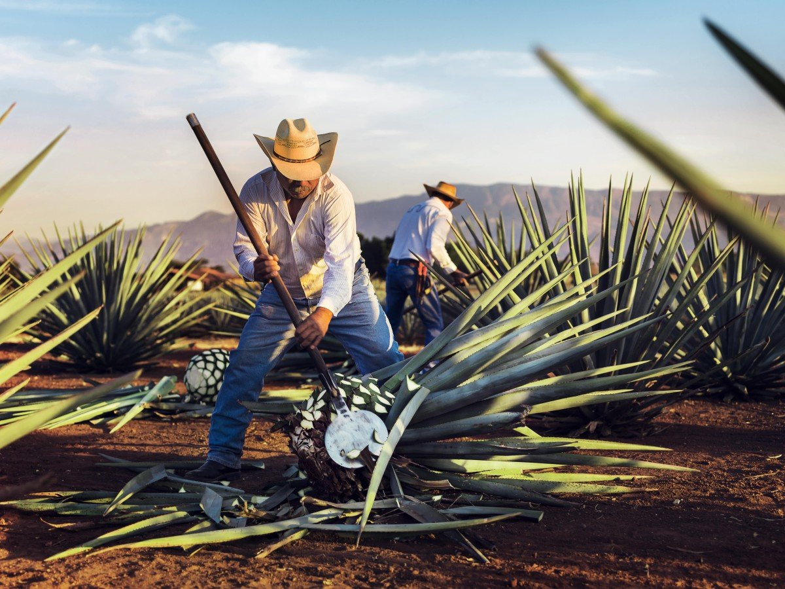

Nosotros
Conoce la historia de nuestro tequila , que toca el alma de cada persona que lo prueba.
>
Las raíces Solorzano
Tierra mexicana con misterios escondidos en cada rincón, tierra bendita y hogareña que obsequia estrellas en las entrañas; Agave, dulce néctar, llegando al corazón de las las raíces Solórzano.

Espíritu y Cuerpo
La autenticidad del Tequila. Esa esencia mística que solo el sabor del verdadero Agave Azul puede otogar es el estandarte que nuestro sabor único ofrece. Reconforta el alma, libera el espíritu y consiente el paladar con Tequila Solorzano.

Nace una Leyenda
Nuestro proceso de producción comienza cuando se plantan los retoños basales de Agave Tequilana Weber, variedad azul. El agave demora de siete a nueve años en madurar y sus azúcares se asientan.